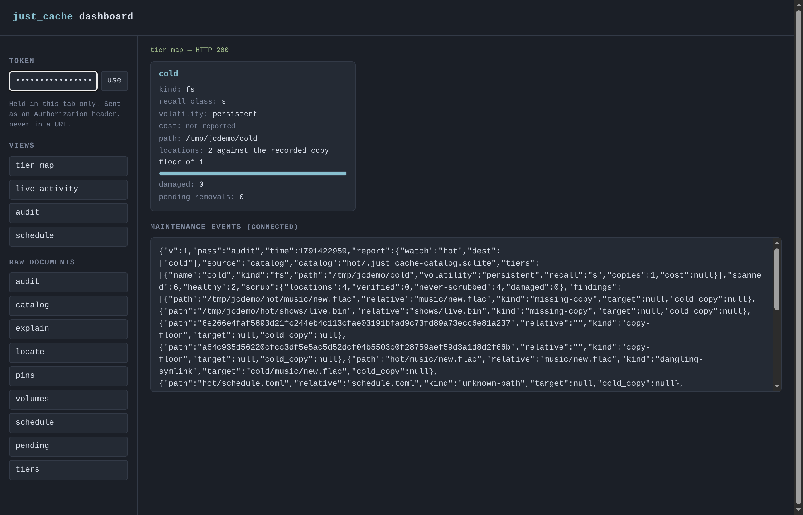
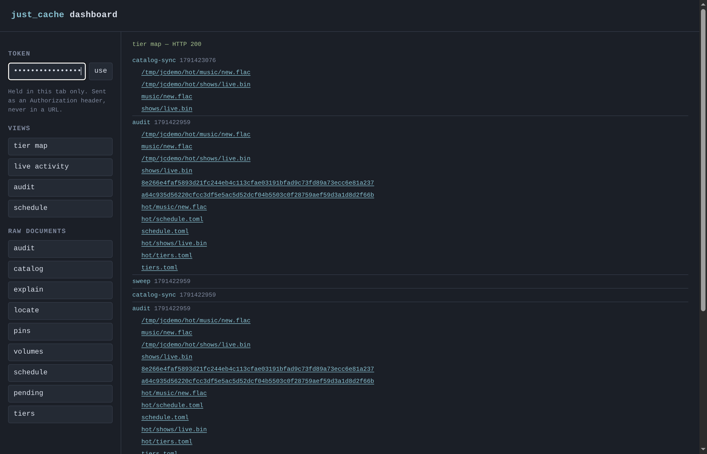
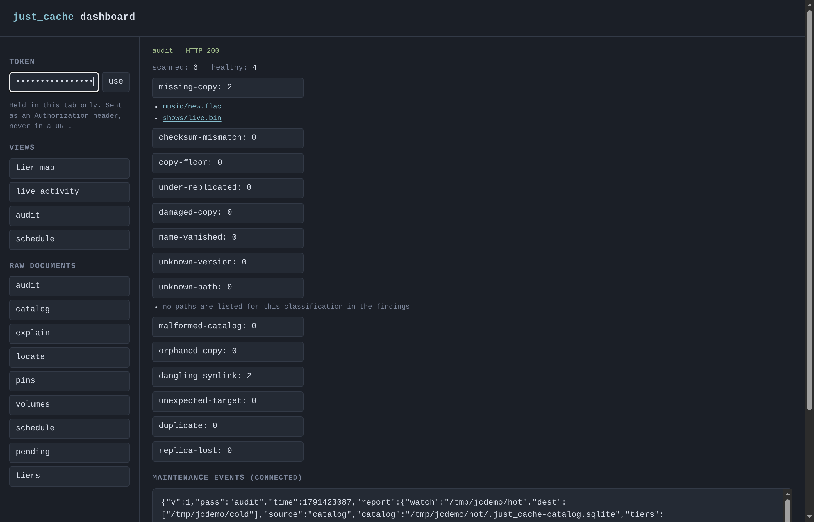
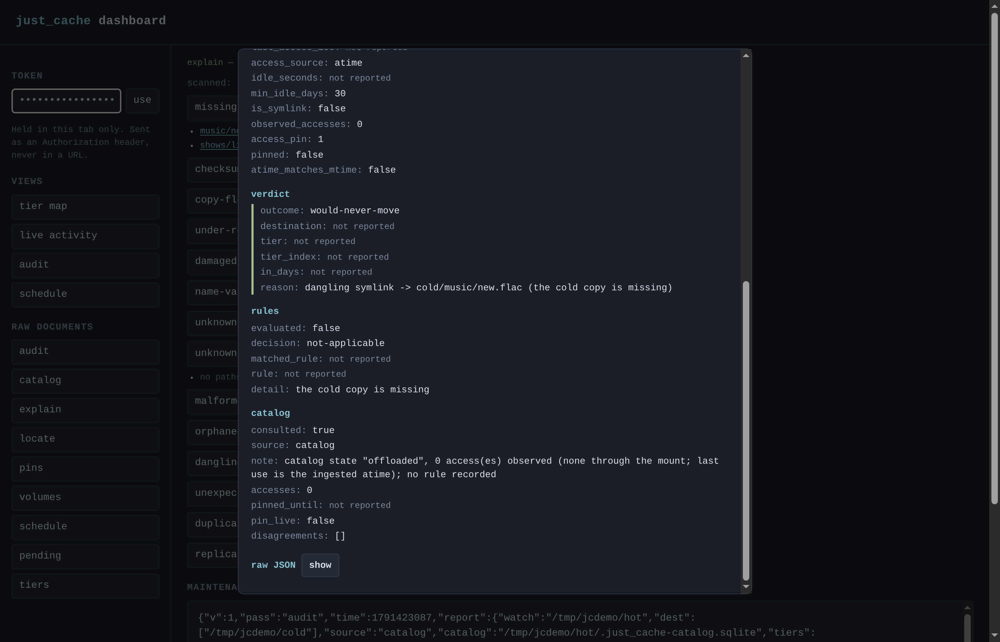
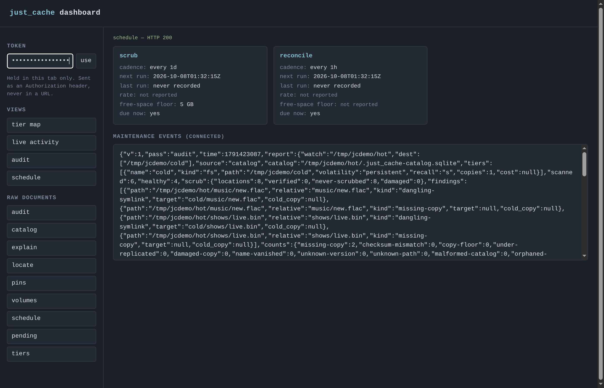

just_cache.
Move idle files to slower storage without changing their paths, and promote frequently read files into a bounded RAM/SSD cache. The durable copy stays authoritative; just_cache also catalogs, checks and restores copies across tiers.
# sweep once, move anything idle 60+ days, cap 25 files per tier
$ just_cache \
--watch /mnt/cache/media \
--dest /mnt/disk-slow/media \
--dest /mnt/disk-archive/media \
--min-idle-days 60 \
--limit 25
moved /mnt/cache/media/shows/s1/ep1.mkv -> /mnt/disk-slow/media/shows/s1/ep1.mkv
pass 1: 340 files scanned, 3 moved, 0 in use, 0 failed, 12 GiB onto the cold tiersMove cold files and keep track of the copies
A mover can relocate old files. just_cache adds a journal for interrupted moves and commands to record, find, check and restore stored copies.
A sweep moves eligible files between local filesystem roots and leaves a symlink at each original path. Programs that follow symlinks can keep using that path; some tools and applications do not handle symlinks as ordinary files, so check your workload first.
Every move records and fsyncs its intent before work begins. Optional --copies N
requires verified copies on distinct configured roots before retiring the source; the roots
can still be on the same host. With the catalog, locate reports recorded
locations, while scrub checks stored bytes against their recorded hashes
and can repair a damaged copy from a sibling copy whose bytes match its recorded hash.
These catalog and scrub operations are explicit commands.
The catalog and namespace also cover remote tiers — cloud object storage, a LAN peer, and an offline disk in a drawer — with recall latency and cost declared per tier. All three drivers are implemented (#141, #142, #143), bytes that cross the machine boundary are sealed with a keyed envelope (#140), and a delete or a garbage collection reaches bytes on a tier that is not mounted (#144). The namespace today is served locally by the symlink tree, a FUSE mount and a WebDAV gateway. See the design and roadmap.
Promote frequently read files into RAM
When a read through the FUSE mount meets the configured promote_on
threshold, just_cache copies the file into a bounded RAM or SSD overlay and serves it from
there. The durable home stays authoritative; this is a cache copy, not a tier move.
Promote on access
The mount observes reads directly. When a file meets the configured threshold, it copies bytes from the home tier and serves the cached copy.
Stay within the cap
LRU eviction keeps the overlay under its size limit. A file larger than the entire cache is not promoted.
RAM is never the only copy
Writes through the mount invalidate the cached copy before changing the home. Cache residency is disposable and is cleared on restart.
Get from fast to slow in one command
Build it, point it at a watched tree and a cold root. A dry run shows the plan without touching files; a real sweep moves eligible files and leaves symlinks at their original paths.
1. Build
$ cargo build --release2. First sweep — check the plan without touching anything
$ just_cache \
--watch /mnt/cache/media \
--dest /mnt/disk-slow/media \
--min-idle-days 30 \
--dry-run3. Do it for real — continuously
$ just_cache \
--watch /mnt/cache/media \
--dest /mnt/disk-slow/media \
--interval 3600 # seconds between sweepsWhat people point it at
Media library
Old episodes and movies nobody has opened this quarter leave the NVMe for a spinning disk; Plex still finds them through the symlink.
Build directories
Vendor trees, build caches and old targets that outlive their usefulness. Exclude what is still live, keep everything else honest.
Strict scope
Manage only the trees you say, never touch anything else. Scope is checked before every other rule and again before bytes move.
Replication
A durability floor: N verified copies on N distinct disks before the source is removed. Checksummed, never guessed.
Backups & archives
Anything written once and read rarely — ISOs, VM images, old project snapshots — flows to cheap bulk storage and stays reachable.
Never a full disk
Each destination keeps a free-space floor. A tier that is out of room reports waiting for room and picks the file up next sweep.
Cold is measured, not guessed
A file moves only when every gate passes — and the tool tells you which gate stopped it.
Idle time comes from the filesystem's access time for a file reached through its symlink. A file read through the mount is judged by the accesses the mount observed itself, so a noatime filesystem cannot make a warm file look cold.
A file held open by another process, or hardlinked elsewhere, is skipped and counted separately — never moved out from under a reader.
--include / --exclude and the size window are the outermost gate, checked before every other rule and again right before bytes move.
A copy is hashed and matched to the source before the original is removed. Same size is not enough; a mismatch is refused.
Every move writes an fsynced intent record first. Recovery asks the filesystem what actually happened and never deletes the only copy.
Failures are per-file and reported; a sweep keeps going, and --once exits non-zero if anything failed.
Beyond moving files
Catalog and recovery commands let you locate, check, and restore files explicitly.
Why is this one file still here? Answers one path in the mover's own evaluation order, read-only.
Records where every object lives, keyed by content hash, in a SQLite catalog — identity survives a rename.
Walks both sides and classifies every path: healthy, duplicate, dangling, orphaned. Exit code 1 on any finding, so cron can alert.
"Where does this live?" answered from the catalog, even when the tier holding it is not mounted.
Brings an offloaded file's bytes back to its hot path, verified, and collapses the symlink into a real file.
Checks each reachable stored copy against its recorded checksum and repairs rot only from a sibling copy that verifies. A copy on an offline volume is verified the same way when that volume is in the drive, and reported unavailable by its volume identity — never corrupt, never missing — when it is not.
Rebuilds missing copies on reachable disks, proving each against the catalog before recording it.
Keeps one object on its tier until a date you name, whatever the idle rules say. A lapsed pin simply stops mattering, and says so.
Mounts the catalog's namespace with FUSE, so a consumer that does not follow symlinks sees real bytes for an offloaded file. Reads recall the bytes and are observed by the mount, not inferred from access time.
Serves the same namespace over an authenticated WebDAV endpoint for backup apps that cannot mount. Reads change nothing; a restore request places bytes through the verified path.
Serves the read-only questions — locate, explain, audit, a dry-run scrub — to a coding agent over MCP on stdio. Starts with its client and exits with it, and no tool moves, repairs or deletes anything; restore appears only when the operator opts in.
Runs the maintenance passes schedule.toml says are due and prints, per pass, the next planned run — so cron can show what it will do before it does it.
Every maintenance pass appends the JSON report it produced to an append-only JSONL file under the .just_cache prefix the walk skips — the stream a web dashboard tails over SSE, and the command's own report, never a second schema. A torn final line is skipped by readers, not called corrupt.
Posts a short summary of a scheduled run, and an audit's findings, to a Discord-compatible webhook — only when notify.toml sits beside the catalog. Unconfigured, no socket is opened; the URL is a credential and is never printed; a delivery failure is a warning, never a failed pass.
Serves a small read-only dashboard from the binary: a static shell, JSON views that replay the read-only commands' own documents byte for byte, and the maintenance events streamed live. Token auth from a file or an environment variable, loopback by default, and no route that moves, repairs or deletes anything.
Clears a pin set by pin.
Promotes reads that meet a configured threshold into a bounded RAM/SSD overlay. The durable home stays authoritative; see how promotion and eviction work.
Releases a name and, when it was the object's last, its recorded copies — in one committed step, refusing with a named reason when a pin or a damaged copy makes the delete unsafe. A copy on a tier that is not mounted is held until that tier returns, never guessed at.
Reports the bytes and empty directories on a tier that no catalog row references, and removes them only under --apply. A copy claimed by a row — even an unverified one — is kept.
Serves an S3-compatible object endpoint backed by local directories, so a LAN peer can be a tier without running a full tool install. SigV4 auth; writes land through the same verified path.
The vault ledger for offline-volume tiers: which physical volume is in a tier's drive and where the others are. The catalog is the source of truth — no marker file is ever written into the volume.
A read-only window on the whole system
just_cache ui serves a small dashboard from the binary itself:
the tier map, the audit findings, the schedule, and the maintenance events as they happen.
Every number on screen is one of the commands' own --json
documents, fetched live — the page computes nothing of its own. It binds loopback by
default, and every data route answers a bearer token from --token-file.
$ just_cache ui \
--watch /mnt/cache/media \
--dest /mnt/disk-slow/media \
--catalog /mnt/cache/media/.just_cache-catalog.sqlite \
--token-file ~/.jc-ui-token
# then open http://127.0.0.1:8732/ and paste the token
tiers --json; the bar is the recorded locations against the recorded copy floor, the two numbers printed as they are, no verdict computed in between.
/api/events stream actually delivers, newest first, each path clickable. A real event also flashes the tier card it names; nothing arrives, nothing moves.
unchecked list as what it is.
explain --json for that one path: scope, guards, policy, then the verdict, with the raw document a toggle away.
schedule --json: cadence, next run, rate and free-space floor, and whether it is due now.One namespace over every tier you own
The design is one namespace over SSD, spinning disks, a LAN peer, cloud object storage and an offline disk in a drawer, with a fast cache overlay in front and placement driven by observed use, in the spirit of S3 storage classes. Local tiers are what this repo does today: the mover is the hot→cold driver and the symlink namespace provider, and the catalog's namespace is also served by a FUSE mount and a WebDAV gateway. The cache overlay and mount-observed use are implemented; LAN, cloud-object and offline tiers are implemented, delete and garbage collection reach a tier that is not mounted, and an MCP adapter exposes the read-only commands to a coding agent while a dashboard serves the same read-only views to a browser and streams the events file live. The full design sketch is in design.md.